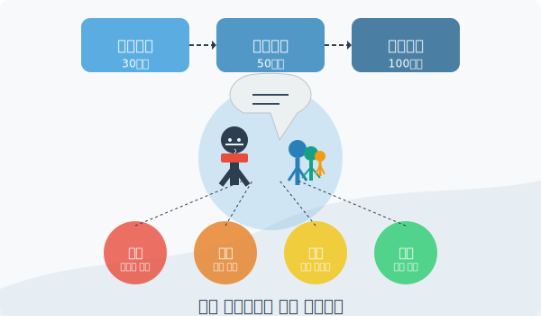
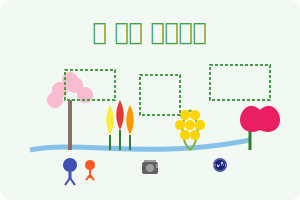

참여형 프로그램 및 운영 시스템 개발
장성 스토리로드의 지속가능한 운영과 풍부한 콘텐츠 확보를 위해 지역 주민이 주도하는 참여형 프로그램을 개발하고, 계절별·테마별 특화 프로그램과 통합 패스포트 시스템을 구축하여 관광객의 몰입도와 재방문율을 높입니다.
참여형 프로그램의 의의
장성 스토리로드는 단순한 관광 인프라가 아닌, 지역 주민과 관광객이 함께 만들어가는 살아있는 문화 공간으로 구성됩니다. 참여형 프로그램은 다음과 같은 의의를 가집니다:
지역 공동체 활성화
지역 주민의 적극적 참여를 통해 지역 정체성을 강화하고 공동체 의식을 높이는 역할
지역 이야기 발굴
잊혀가는 지역의 역사, 설화, 생활문화 등을 수집하여 소중한 문화 자원으로 보존
지속가능한 운영
주민 주도의 운영 체계 구축으로 장기적이고 지속가능한 관광 생태계 조성
차별화된 경험 제공
지역 주민과의 교류를 통해 관광객에게 특별하고 진정성 있는 여행 경험 선사
1. 지역 주민 주도형 스토리텔러 프로그램
① 장성 스토리텔러 양성 프로젝트

교육 과정 단계별 구성
| 과정 | 시간 | 주요 내용 |
|---|---|---|
| 기본과정 | 30시간 | 장성의 역사, 문화, 설화 교육 |
| 심화과정 | 50시간 | 스토리텔링 기법, 해설 스킬, 외국어 기초 |
| 전문과정 | 100시간 | 테마별 전문 해설사 양성, 체험 프로그램 기획 |
양성 과정 개발 및 운영
- 전문 강사진 구성: 지역학 전문가, 스토리텔링 전문가, 현장 경험이 풍부한 관광해설사로 구성
- 현장 중심 교육: 이론 교육과 현장 실습을 병행하여 실질적인 역량 강화
- 맞춤형 교육: 참여자의 연령, 경험, 관심사에 따른 맞춤형 교육 제공
- 자격 인증 제도: 교육 이수자에게 '장성 스토리텔러' 인증서 발급
주민 스토리 발굴단 운영
- 마을별 어르신 구술사 채록 프로젝트: 마을별 원로 주민들의 기억과 이야기를 수집하여 아카이빙
- '우리 마을 숨은 이야기' 공모전: 지역 주민들이 알고 있는 마을 이야기, 설화, 민담 등을 발굴
- 발굴된 스토리의 콘텐츠화 지원: 수집된 이야기를 스토리로드 콘텐츠로 적극 활용
활동 지원 시스템
- 정기 활동비 지급: 활동 횟수와 시간에 따른 적정 수준의 활동비 지급
- 성과 인센티브: 방문객 만족도 평가 등을 통한 우수 스토리텔러 인센티브 제공
- 전문 스토리텔러 복장 및 장비 지원: 테마별 특화 복장, 해설 도구 등 지원
- 정기 역량 강화 교육: 월 1회 정기 워크숍, 분기별 심화 교육 실시
- 스토리텔러 네트워킹: 정기 모임과 교류회를 통한 정보 공유 및 협력 강화
② 주민참여 체험 프로그램 개발
마을별 특화 프로그램
| 지역 | 특화 프로그램 |
|---|---|
| 황룡면 |
|
| 진원면 |
|
| 북하면 |
|
| 장성읍 |
|
세대 연계 프로그램
청소년-어르신 '장성 이야기 도우미' 활동
지역 청소년이 어르신의 이야기를 듣고 함께 관광객에게 전달하는 세대 간 협력 프로그램
- 청소년: 디지털 기기 활용 및 외국어 지원
- 어르신: 지역의 역사와 문화에 대한 풍부한 이야기 제공
- 월 1회 세대 공감 워크숍 운영
가족 단위 '우리 가족 장성 탐험대' 운영
가족 단위 관광객이 지역 가족과 함께하는 교류 체험 프로그램
- 지역 가정집 방문 및 문화 교류
- 가족 단위 로컬 체험 활동 공유
- 지역 가족과 관광객 가족 간 인연 맺기
정기 공연 및 이벤트
월 1회 '황룡의 숨결' 테마 공연
황룡강변 특설무대에서 진행되는 주민 참여 문화공연
- 지역 주민 공연단 구성 및 운영
- 테마별 스토리를 담은 음악, 연극, 퍼포먼스
- 관광객 참여형 공연 요소 포함
계절별 특화 이벤트
사계절 각각의 특성을 살린 특별 이벤트 개최
- 봄: 황룡강 봄꽃 음악회
- 여름: 백양사 계곡 별빛 투어
- 가을: 단풍길 스토리 페스티벌
- 겨울: 화롯가 옛이야기 모임
주민-관광객 교류 워크숍
지역 주민과 관광객이 함께 참여하는 다양한 워크숍 운영
- 지역 특산물을 활용한 요리 교실
- 장성 자연 소재를 활용한 공예 워크숍
- 지역 문화예술 체험 클래스
- 농사 및 생태 체험 워크숍
2. 계절별·테마별 특화 프로그램
장성의 사계절 매력을 최대한 활용하고 각 테마 스토리로드의 특성을 살린 특화 프로그램을 개발하여 시기별로 다양한 관광 경험을 제공합니다.
봄 (3~5월)

황룡강 꽃길 스토리 투어
- 황룡강 르네상스와 함께하는 꽃길 해설 투어
- 봄꽃 사진 촬영 클래스 및 포토존 운영
- 야간 '꽃과 빛의 판타지' 라이트 쇼 (주말)
선비의 봄 나들이
- 필암서원 춘향제 참여 및 전통 의례 체험
- '하서의 봄 시(詩)' 감상 및 한시 짓기 체험
- 매화와 함께하는 선비의 풍류 체험
여름 (6~8월)
야간 별빛 스토리텔링 투어
- 황룡강변 '별빛 스토리로드' 야간 특별 투어
- 전문 천문가이드와 함께하는 별자리 스토리텔링
- 장성의 전설을 활용한 프로젝션 매핑쇼 (월 2회)
장성 수변 활동
- 장성호 '물 위의 이야기길' 보트 투어
- 황룡강 생태 체험 및 수생식물 관찰
- 백양사 계곡 치유 프로그램
가을 (9~11월)
단풍 트레킹과 역사 이야기길
- 백양사 단풍길 명상 트레킹
- 축령산 편백숲 치유 프로그램
- 내장산 국립공원 연계 단풍 스토리 투어
황룡강 가을꽃 축제 연계 프로그램
- 코스모스, 핑크뮬리 등 가을꽃과 함께하는 포토 투어
- '꽃과 예술의 만남' 문화예술 공연 시리즈
- 가을 수확 농산물 요리 체험 및 시식회
겨울 (12~2월)
설화(雪花)와 설화(說話)의 겨울 스토리로드
- 겨울 설경 명소 스노우 트레킹
- '화롯가의 옛 이야기' 실내 스토리텔링 모임
- 전통 겨울 놀이 및 음식 체험
연말연시 특별 프로그램
- '새해 소원 담은 황룡등' 만들기 및 띄우기
- 겨울 별빛 테마 조명 투어
- 신년 해돋이 투어 및 길놀이
3. 장성 스토리로드 통합 패스포트 시스템
관광객의 체류시간을 연장하고 재방문을 유도하기 위해 실물 패스포트와 디지털 앱을 연계한 통합 패스포트 시스템을 구축하여 스토리로드 탐방의 재미와 성취감을 높입니다.
① 패스포트 구성 및 운영
물리적 패스포트 제작
- 황룡 모티브 디자인의 40페이지 스토리북 겸 패스포트
- 5개 테마별 섹션 구성 및 스탬프 공간 마련
- 주요 스토리 내용 및 미니 가이드 정보 수록
- 방문 기록 및 소감 작성 공간 제공
- QR코드 연동 시스템으로 디지털 콘텐츠 접근
디지털 패스포트 앱 연동
- 실물 패스포트와 QR코드로 연동되는 모바일 앱 구현
- 방문 기록, 사진, 소감 등 디지털 기록 저장 기능
- 소셜미디어 공유 및 온라인 커뮤니티 참여 기능
- 디지털 인증 배지 및 포인트 적립 시스템
- GPS 기반 자동 방문 인증 기능
발급 및 관리 시스템
- 황룡 스토리 허브, 관광안내소, 주요 관광시설에서 발급
- 온라인 사전 예약 시스템 구축
- 유료(5,000원) 발급으로 지속가능 운영 재원 확보
- 패스포트 보유자 전용 혜택 및 할인 제공
② 인증 및 리워드 체계
단계별 인증 시스템
| 인증 단계 | 인증 조건 |
|---|---|
| 테마별 인증 | 각 테마 코스 내 5개 포인트 방문 인증 |
| 종합 인증 | 5개 테마 모두 기본 인증 완료 |
| 마스터 인증 | 모든 스토리 포인트 100% 방문 완료 |
| 시즌 컬렉터 | 4계절 각각의 특별 스탬프 수집 완료 |
리워드 프로그램
| 인증 단계 | 리워드 내용 |
|---|---|
| 테마별 인증 | 테마별 기념품 및 뱃지 제공 |
| 종합 인증 | '황룡의 숨결' 특별 인증서 및 메달, 지역상품권(1만원) 제공 |
| 마스터 인증 | VIP 회원 등록, 특별 체험 프로그램 초대, 장성군 명예 관광 홍보대사 임명 |
| 시즌 컬렉터 | 한정판 '사계절 황룡' 기념품 세트 및 할인 쿠폰북 증정 |
특별 이벤트
- 시즌별 '히든 스탬프' 찾기 미션
- 방문 횟수에 따른 누적 포인트 제도
- 연간 최다 방문자 '장성 스토리 킹/퀸' 선발 및 시상
- SNS 방문 인증 시 추가 혜택 제공
③ 패스포트 시스템의 활용 및 확장
지역 경제 연계 시스템
- 지역 상점, 식당, 숙박업소 연계 할인 혜택
- 패스포트 인증 단계별 차등 할인율 적용
- 지역 특산품 구매 시 추가 스탬프 제공
- 인기 체험 프로그램 우선 예약 권한 및 할인 혜택
- VIP 회원 전용 특별 체험 프로그램 운영
향후 확장 방안
- 담양, 광주 등 인접 지역 관광지와 연계 확장
- 전라남도 황금길 프로젝트 연계 확대
- 교육기관 연계 체험학습 프로그램
- 기업 연수 및 워크숍 연계 패키지
- 계절별 한정판 패스포트 에디션 발행